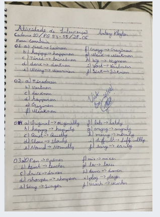
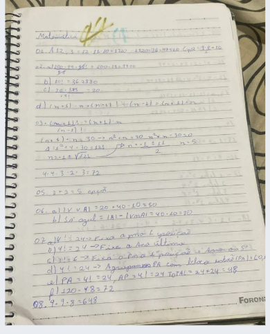

LINGUAGENS

EIXO I
Resolução das páginas indicadas pelo professor
Marcelo, aplicando interpretação e análise textual
para aprimorar a compreensão.
MATEMÁTICA

EIXO I
Atividade realizada em sala de aula abordando
o conceito de números primos, com o objetivo
de identificar suas características.